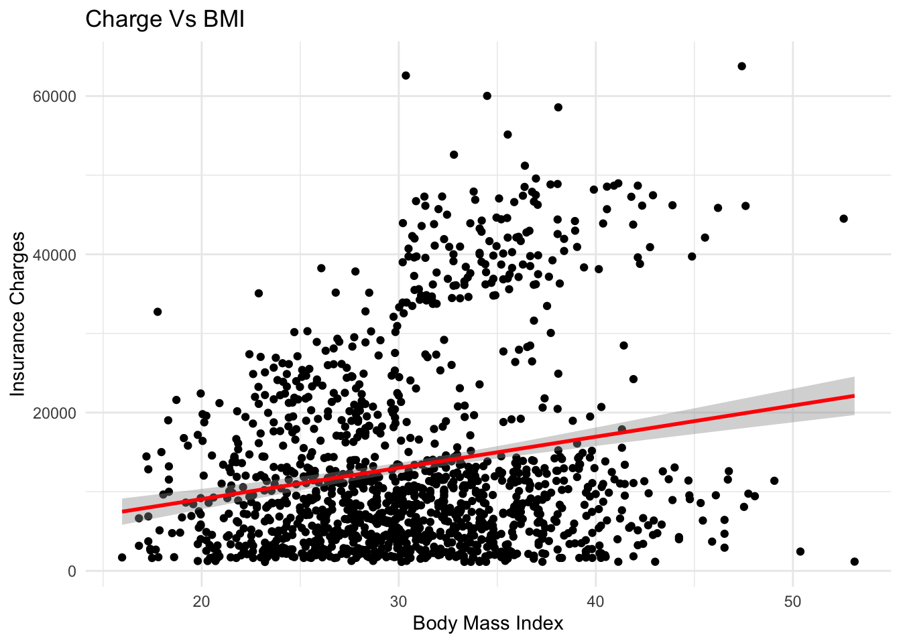
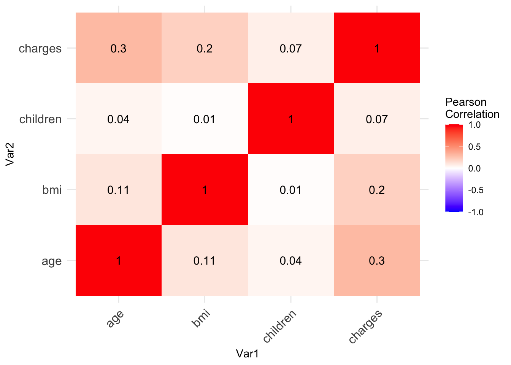
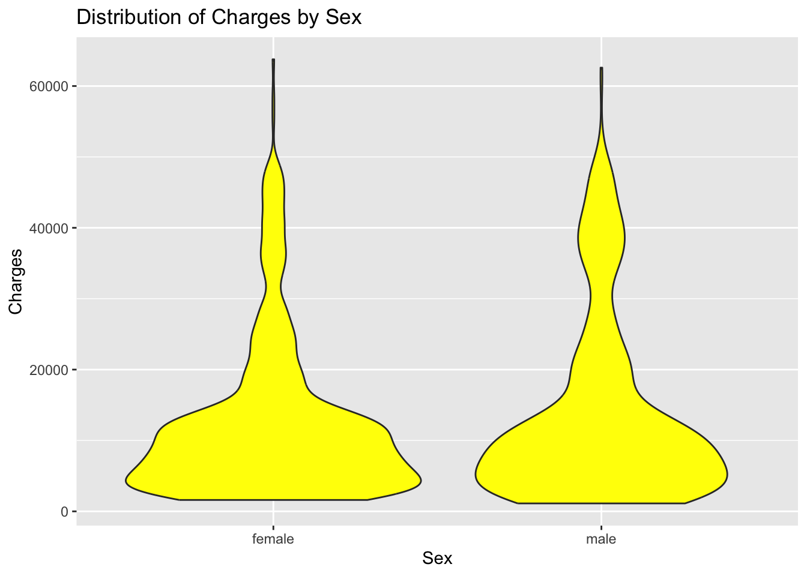
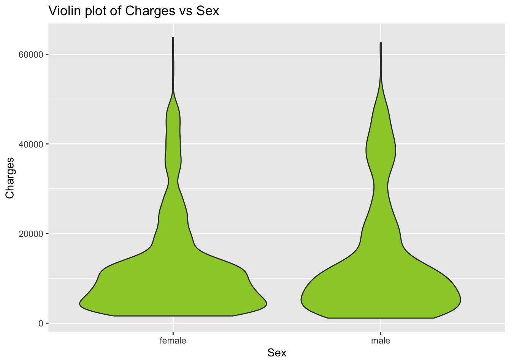
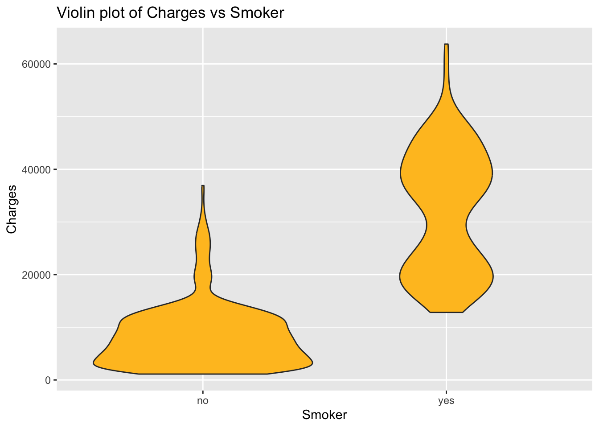
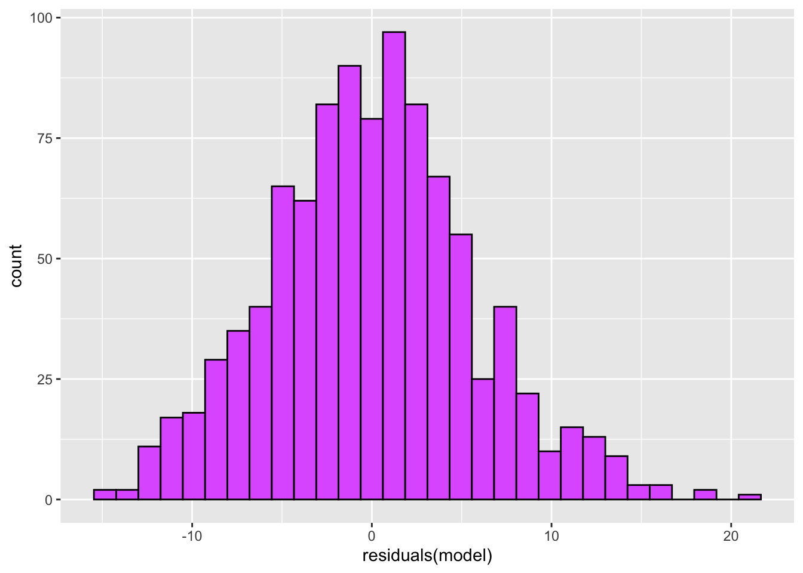

Linear regression is a powerful statistical method that allows us to examine the relationship between two (simple linear regression) or more (multiple linear regression) variables. A key feature of linear regression is its simplicity and interpretability. It’s used in various fields, including machine learning, most medical fields, and social sciences.
Linear regression models the relationship between two variables by fitting a linear equation to observed data. The steps to perform multiple linear regression are almost identical to those of simple linear regression.
Types of regression:
a. Simple linear regression: In this case, we use only one input variable
b. Multiple linear regression: In this case, We use multiple input variable
The Dataset
I will update about it soon.
Assumptions:
There are several assumption for the linear regression model that I am using in this blog. They are explained below, lets take a look.
Linearity: The relationship between the independent and dependent variables is linear. This assumption can be checked by plotting the variables and examining the data scatter.
Independence: The residuals (the differences between the observed and predicted values) are independent. In other words, there is not a specific pattern in the residuals.
Homoscedasticity: The variance of the residuals is constant across all levels of the independent variables. This means that the spread of the residuals should be similar for all predicted values.
Normality: The residuals are normally distributed. If this assumption is violated, then the confidence intervals may not be accurate.
Absence of multicollinearity: In the case of multiple linear regression, the independent variables should not be too highly correlated with each other.
The following objects are masked from 'package:stats':
filter, lag
The following objects are masked from 'package:base':
intersect, setdiff, setequal, union
library(broom)library(ggpubr)library(corrplot)
corrplot 0.92 loaded
library(reshape2)
# Load the data into Rdata <-read.csv('/Users/test/Desktop/Machine_learning/mlblog/kchhetri.github.io/insurance.csv')# Lets see the couple of rows of this datahead(data)
age sex bmi children smoker region charges
1 19 female 27.900 0 yes southwest 16884.924
2 18 male 33.770 1 no southeast 1725.552
3 28 male 33.000 3 no southeast 4449.462
4 33 male 22.705 0 no northwest 21984.471
5 32 male 28.880 0 no northwest 3866.855
6 31 female 25.740 0 no southeast 3756.622
Load and clean the data:
# Check for missing valuessum(is.na(data))
[1] 0
# Handle missing values (if any)# data <- na.omit(data) # drops rows with missing values# data <- data[complete.cases(data), ] # drops rows with missing values# data$column <- ifelse(is.na(data$column), mean(data$column, na.rm = TRUE), data$column) # fills missing values with mean
Since, we don’t have any null or missing value in this data as indicated above. So, no further handling of missing data is needed.
Visualize the data: for better understanding of the data before proceeding further
# Visualize the dataggplot(data, aes(x=bmi, y=charges)) +geom_point() +geom_smooth(method=lm, col="red") +labs(x="Body Mass Index",y="Insurance Charges",title="Charge Vs BMI") +theme_minimal()
`geom_smooth()` using formula = 'y ~ x'

Lets take a look for the correlation between these two features: Our data contains one column “Species” which is non-numeric. Thus, we will firstly subset the data that doesnot contains “Species” column.
# Subset the data to include only numeric columnsdata_numeric <- data[, sapply(data, is.numeric)]# Calculate the correlation matrixcorrelation_matrix <-cor(data_numeric)# Print the correlation matrixprint(correlation_matrix)
age bmi children charges
age 1.0000000 0.1092719 0.04246900 0.29900819
bmi 0.1092719 1.0000000 0.01275890 0.19834097
children 0.0424690 0.0127589 1.00000000 0.06799823
charges 0.2990082 0.1983410 0.06799823 1.00000000
Create the heatmap for better visualization:
# Melt the correlation matrix into a long formatdata_melt <-melt(correlation_matrix)# Create a heatmap with ggplot2ggplot(data_melt, aes(x=Var1, y=Var2, fill=value)) +geom_tile() +geom_text(aes(label =round(value, 2)), size =4) +scale_fill_gradient2(low="blue", high="red", mid="white", midpoint=0, limit=c(-1,1), space="Lab", name="Pearson\nCorrelation") +theme_minimal() +theme(axis.text.x =element_text(angle =45, vjust =1, size =12, hjust =1),axis.text.y =element_text(size =12))

From the heatmap created using the above code, we can see there is no strong correlation between different variables. However, this part is made to visualize the data only.
Building the model: From the above code and analysis, we understand about the data and its distribution. Now, we can build model that fits for our data. In this particular case, we are going to use the linear regression model.
# Create a violin plot for 'age'ggplot(data, aes(x=sex, y=charges)) +geom_violin(fill="yellow") +labs(title="Distribution of Charges by Sex", x="Sex", y="Charges")

# Create a violin plot for 'charges' vs 'sex'p1 <-ggplot(data, aes(x=sex, y=charges)) +geom_violin(fill="yellowgreen") +labs(title="Violin plot of Charges vs Sex", x="Sex", y="Charges")# Create a violin plot for 'charges' vs 'smoker'p2 <-ggplot(data, aes(x=smoker, y=charges)) +geom_violin(fill="goldenrod1") +labs(title="Violin plot of Charges vs Smoker", x="Smoker", y="Charges")# Print the plotsprint(p1)

print(p2)

According to the left plot, the average insurance cost for men and women is roughly the same at $5,000. The insurance costs for smokers in the right plot vary significantly from those for non-smokers; the average cost for a non-smoker is about $5,000. The minimum insurance premium for smokers is $5,000.
Need to check again on these
# Split the data into training and test setsset.seed(0)sampleSplit <-sample.split(Y=data$bmi, SplitRatio=0.7)trainSet <-subset(x=data, sampleSplit==TRUE)testSet <-subset(x=data, sampleSplit==FALSE)# Fit the modelmodel <-lm(formula=bmi ~ ., data=trainSet)
By using a linear combination of all other attributes, we hope to predict the bmi attribute. In this case, we don’t have to worry about the categorical attributes. R automatically manages the categorical attributes.
Lets see the summary of model:
# Split the data into training and test setssummary(model)
Call:
lm(formula = bmi ~ ., data = trainSet)
Residuals:
Min 1Q Median 3Q Max
-14.9234 -3.7146 0.0124 3.4208 20.9629
Coefficients:
Estimate Std. Error t value Pr(>|t|)
(Intercept) 2.766e+01 6.883e-01 40.181 < 2e-16 ***
age -2.573e-02 1.521e-02 -1.692 0.0910 .
sexmale 7.230e-01 3.679e-01 1.965 0.0497 *
children -2.269e-02 1.504e-01 -0.151 0.8801
smokeryes -6.980e+00 7.894e-01 -8.841 < 2e-16 ***
regionnorthwest -2.051e-01 5.294e-01 -0.387 0.6986
regionsoutheast 3.923e+00 5.169e-01 7.589 7.58e-14 ***
regionsouthwest 1.379e+00 5.307e-01 2.599 0.0095 **
charges 2.803e-04 2.771e-05 10.119 < 2e-16 ***
---
Signif. codes: 0 '***' 0.001 '**' 0.01 '*' 0.05 '.' 0.1 ' ' 1
Residual standard error: 5.73 on 967 degrees of freedom
Multiple R-squared: 0.181, Adjusted R-squared: 0.1742
F-statistic: 26.71 on 8 and 967 DF, p-value: < 2.2e-16
The P-values that are shown in the Pr(>|t|) column are the most intriguing aspect of this situation. The probability significance column Pr(>|t|) in the above table is a crucial factor to take into account because it shows how important probability is for prediction. Here, we took a significance level of 5% for the calculation.
modelResiduals <-as.data.frame(residuals(model))ggplot(modelResiduals, aes(residuals(model)))+geom_histogram(fill ='mediumorchid1', color ='black')
`stat_bin()` using `bins = 30`. Pick better value with `binwidth`.

The distribution of the residual data is approximately normally distributed.
Make the prediction:
preds <-predict(model, testSet)
Now, see the further details by creating a table for for actual and prediction values from the above created model.
Model evaluation: After building the model, its time to see how good the model is. We evaluate the model based on its performance which involved root mean square error (rmse).
Lets learn little bit about rmse: The Root Mean Square Error (RMSE) is a frequently used measure to evaluate the prediction errors of a regression model. It tells us about the distribution of the residuals (prediction errors), with a lower RMSE indicating a better fit for the data.
During model evaluation, RMSE serves as a measure to understand the model’s performance. Specifically, it reveals how close the predicted values are to the actual ones. An RMSE of zero indicates perfect predictions, which, in practice, is highly unlikely if not impossible.